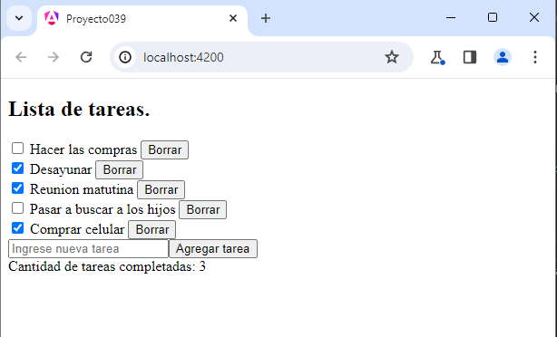

Ya vimos en los primeros conceptos que el decorador @Input nos permite pasar datos de la componente padre a la componente hija. También vimos que el decorador @Output nos permite disparar eventos desde la componente hija a la componente padre.
Ahora ya tenemos un conocimiento más profundo de los decoradores y como Angular en tiempo de compilación puede generar un código JavaScript y enlazar el pasaje de datos entre componentes.
Crear una aplicación que permita registrar tareas que se deben desarrollar y mediante controles checkbox tildar las ya realizadas, informando en la parte inferior cuantas de dichas tareas han sido finalizadas hasta dicho momento.
Crear dos componentes, una llamada ListaTareas que muestre todas las tareas, permita ingresar nuevas tareas e informe las tareas finalizadas y por otro lado una componente llamada Tarea que tenga por objetivo mostrar una tarea, poder indicar que ya ha sido realizada e informar a la componente padre cada vez que cambia el estado de la tarea.
La interfaz visual es similar a:
Podemos probar esta aplicación también en la web aquí.
Crearemos primero el proyecto
ng new proyecto039
Creamos el modelo de dato que representa una tarea mediante una 'interface':
ng generate interface tarea
Se nos crea el archivo 'tarea.ts' donde definimos la interface:
export interface Tarea {
id: number,
descripcion: string,
finalizada: boolean
}
Por cada tarea guardaremos su identificador, descripción y si la tarea fue finalizada.
Pasemos a crear ahora la componente "Tarea":
ng generate component tarea
Se nos crea una carpeta con los 4 archivos que representan la componente, procedemos a modificar la clase propiamente dicha y la plantilla HTML.
tarea.component.ts
import { Component, Input, Output, EventEmitter } from '@angular/core';
import { Tarea } from '../tarea';
@Component({
selector: 'app-tarea',
imports: [],
templateUrl: './tarea.component.html',
styleUrl: './tarea.component.css'
})
export class TareaComponent {
@Input() tarea: Tarea = { id: 0, descripcion: '', finalizada: false };
@Output() borrarTarea: EventEmitter<number> = new EventEmitter<number>();
cambiarEstado() {
this.tarea.finalizada = !this.tarea.finalizada;
}
borrar() {
this.borrarTarea.emit(this.tarea.id);
}
}
import { Component, Input, Output, EventEmitter } from '@angular/core';
Debemos importar primero los 3 decoradores y la interface EventEmitter.
import { Tarea } from '../tarea';
También importamos la interface que creamos nosotros.
@Input() tarea: Tarea = { id: 0, descripcion: '', finalizada: false };
Definimos el decorador input que se aplica a la propiedad 'tarea' (es decir es un decorador de propiedad y no de clase como Component), el mismo espera recibir una tarea como entrada, lo inicializamos pero seguramente cuando lo invoquemos cambie con los datos que llegan desde la componente padre.
@Output() borrarTarea: EventEmitter<number> = new EventEmitter<number>();
Es un decorador que indica que borrarTarea es un evento de salida. Cuando se llama al método borrar(), emite un evento con el ID de la tarea que se va a borrar.
cambiarEstado() {
this.tarea.finalizada = !this.tarea.finalizada;
}
Es un método que cambia el estado de la tarea (marcada o no marcada como finalizada) al ser llamado.
borrar() {
this.borrarTarea.emit(this.tarea.id);
}
Emite el evento borrarTarea con el ID de la tarea que se va a borrar.
La plantilla HTML para 'TareaComponent' es:
<div>
<input type="checkbox" [checked]="tarea.finalizada" (change)="cambiarEstado()">
{{ tarea.descripcion }}
<button (click)="borrar()">Borrar</button>
</div>
<input type="checkbox" [checked]="tarea.finalizada" (change)="cambiarEstado()">
Se crea un elemento input de tipo checkbox. [checked]="tarea.finalizada" utiliza la propiedad binding para enlazar el estado del checkbox al valor de tarea 'finalizada'. Esto significa que el checkbox estará marcado (checked) si tarea.finalizada es true, y desmarcado si es false.
(change)="cambiarEstado()": Utiliza un evento de cambio (change) para llamar al método cambiarEstado() cuando el estado del checkbox cambia.
<button (click)="borrar()">Borrar</button>
(click)="borrar()": Utiliza un evento de clic (click) para llamar al método borrar()
Pasemos a crear ahora la componente "listatareas":
ng generate component listatareas
Se nos crea una carpeta con los 4 archivos que representan la componente, procedemos a modificar la clase propiamente dicha y la plantilla HTML.
listatareas.component.ts
import { Component } from '@angular/core';
import { Tarea } from '../tarea';
import { TareaComponent } from '../tarea/tarea.component';
import { FormsModule } from '@angular/forms';
@Component({
selector: 'app-listatareas',
imports: [TareaComponent, FormsModule],
templateUrl: './listatareas.component.html',
styleUrl: './listatareas.component.css'
})
export class ListatareasComponent {
tareas: Tarea[] = [];
descripcionTarea: string = '';
agregarTarea() {
const nuevaTarea: Tarea = { id: this.tareas.length + 1, descripcion: this.descripcionTarea, finalizada: false };
this.tareas.push(nuevaTarea);
this.descripcionTarea = '';
}
borrarTarea(tareaId: number) {
this.tareas = this.tareas.filter(tarea => tarea.id !== tareaId);
}
cantidadTareasCompletadas(): number {
return this.tareas.filter(tarea => tarea.finalizada).length;
}
}
import { Component } from '@angular/core';
import { Tarea } from '../tarea';
import { TareaComponent } from '../tarea/tarea.component';
import { FormsModule } from '@angular/forms';
Importamos el decorador Component, la interface Tarea, la componente TareaComponent y como vamos a trabajar con formularios basado en plantillas debemos importar FormsModule.
@Component({
selector: 'app-listatareas',
imports: [TareaComponent, FormsModule],
templateUrl: './listatareas.component.html',
styleUrl: './listatareas.component.css'
})
Importamos en el decorador de la componente la componente que creamos nosotros 'TareaComponent' y FormsModule.
tareas: Tarea[] = [];
tareas es un array que almacenará las instancias de la interface Tarea.
descripcionTarea: string = '';
descripcionTarea es una propiedad que se utiliza para almacenar la descripción de la tarea que se va a agregar y esta vinculado al control input de tipo type de la plantilla HTML.
agregarTarea() {
const nuevaTarea: Tarea = { id: this.tareas.length + 1, descripcion: this.descripcionTarea, finalizada: false };
this.tareas.push(nuevaTarea);
this.descripcionTarea = '';
}
Es un método que crea una nueva tarea con la descripción ingresada y la agrega al array de tareas. Luego, reinicia la propiedad descripcionTarea para que se borre en el formulario la tarea ingresada.
borrarTarea(tareaId: number) {
this.tareas = this.tareas.filter(tarea => tarea.id !== tareaId);
}
Es un método que filtra las tareas para eliminar aquella cuyo id coincide con el tareaId proporcionado desde la plantilla HTML.
cantidadTareasCompletadas(): number {
return this.tareas.filter(tarea => tarea.finalizada).length;
}
Devuelve el número de tareas completadas, utilizando el método filter para filtrar las tareas con finalizada establecida como true y luego calcula la longitud del array resultante.
La plantilla HTML para 'ListatareasComponent' es:
<div>
<h2>Lista de tareas.</h2>
@for(tarea of tareas; track tarea.id) {
<app-tarea [tarea]="tarea" (borrarTarea)="borrarTarea($event)"></app-tarea>
}
<div>
<input [(ngModel)]="descripcionTarea" placeholder="Ingrese nueva tarea">
<button (click)="agregarTarea()">Agregar tarea</button>
</div>
</div>
<div>
Cantidad de tareas completadas: {{ cantidadTareasCompletadas() }}
</div>
@for(tarea of tareas; track tarea.id) {
Utilizamos un bucle para recorrer el arreglo de tareas.
<app-tarea [tarea]="tarea" (borrarTarea)="borrarTarea($event)"></app-tarea>
Para cada tarea, se utiliza el componente app-tarea para representarla. Se enlaza la tarea actual mediante [tarea]="tarea", y se escucha el evento borrarTarea para ejecutar el método.
<input [(ngModel)]="descripcionTarea" placeholder="Ingrese nueva tarea">
Crea un campo de entrada de texto con enlace bidireccional ([(ngModel)]) a la propiedad descripcionTarea. Esto permite que la variable descripcionTarea en el componente refleje los cambios en este campo de entrada.
<button (click)="agregarTarea()">Agregar tarea</button>
Crea un botón que llama al método agregarTarea() cuando se hace clic en él. Este método agrega una nueva tarea a la lista.
Por último debemos modificar la componente que crea Angular por defecto, donde agregaremos la lista de tareas:
appcomponent.component.ts
import { Component } from '@angular/core';
import { RouterOutlet } from '@angular/router';
import { ListatareasComponent } from './listatareas/listatareas.component';
@Component({
selector: 'app-root',
imports: [RouterOutlet, ListatareasComponent],
templateUrl: './app.component.html',
styleUrls: ['./app.component.css']
})
export class AppComponent {
}
import { ListatareasComponent } from './listatareas/listatareas.component';
Importa la componente ListatareasComponent.
@Component({
selector: 'app-root',
imports: [RouterOutlet, ListatareasComponent],
templateUrl: './app.component.html',
styleUrls: ['./app.component.css']
})
También en el decorador hacemos referencia a la importación del componente 'ListatareasComponent'.
La plantilla HTML para 'AppComponent' es:
<app-listatareas></app-listatareas> <router-outlet />
Incluimos la componente ListatareasComponent en la plantilla HTML mediante la etiqueta app-listatareas que se encuentra definida en la propidad select del decorador de la clase 'ListatareasComponent'.
Ahora podemos ejecutar la aplicación:
ng serve -o
Podemos probar esta aplicación también en la web aquí.